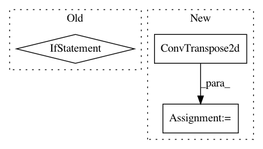

3312380c4983dc6f7aff4488ccdd2c6167803c30,models/modules/shift_unet.py,InceptionShiftUnetSkipConnectionBlock,__init__,#InceptionShiftUnetSkipConnectionBlock#Any#Any#Any#Any#Any#Any#Any#Any#Any#Any#Any#Any#Any#Any#,700
Before Change
if input_nc is None:
input_nc = outer_nc
if shift_layer:
// As the downconv layer is outer_nc in and inner_nc out.
// So the shift define like this:
shift = InnerShiftTriple(opt.shift_sz, opt.stride, opt.mask_thred, opt.triple_weight, layer_to_last=layer_to_last)
shift.set_mask(mask_global)
shift_list.append(shift)
// Add latent constraint
// Then add the constraint to the constrain layer list!
innerCosBefore = InnerCos(strength=opt.strength, skip=opt.skip, layer_to_last=3)
innerCosBefore.set_mask(mask_global) // Here we need to set mask for innerCos layer too.
innerCos_list.append(innerCosBefore)
downconv = InceptionDown(input_nc, inner_nc) // nn.Conv2d(input_nc, inner_nc, kernel_size=4,stride=2, padding=1)
downrelu = nn.LeakyReLU(0.2, True)
downnorm = norm_layer(inner_nc)
After Change
model = down + [submodule] + up
// for the innermost, the special is `inner_nc` instead of `inner_nc*2`
elif innermost:
upconv = spectral_norm(nn.ConvTranspose2d(inner_nc, outer_nc,
kernel_size=4, stride=2,
padding=1), use_spectral_norm)
down = [downrelu, downconv] // for the innermost, no submodule, and delete the bn
up = [uprelu, upconv, upnorm]
model = down + up
// else, the normal
In pattern: SUPERPATTERN
Frequency: 3
Non-data size: 3
Instances
Project Name: Zhaoyi-Yan/Shift-Net_pytorch
Commit Name: 3312380c4983dc6f7aff4488ccdd2c6167803c30
Time: 2019-02-27
Author: yanzhaoyi@outlook.com
File Name: models/modules/shift_unet.py
Class Name: InceptionShiftUnetSkipConnectionBlock
Method Name: __init__
Project Name: Zhaoyi-Yan/Shift-Net_pytorch
Commit Name: 3312380c4983dc6f7aff4488ccdd2c6167803c30
Time: 2019-02-27
Author: yanzhaoyi@outlook.com
File Name: models/modules/shift_unet.py
Class Name: InceptionUnetSkipConnectionBlock
Method Name: __init__
Project Name: osmr/imgclsmob
Commit Name: 9963f2ded56fb471cd0597a3a64e99eaeb0d64ca
Time: 2021-02-11
Author: osemery@gmail.com
File Name: pytorch/pytorchcv/models/others/_linknet.py
Class Name: BasicBlock
Method Name: __init__